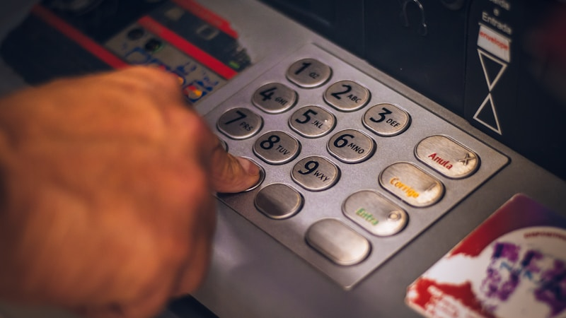

韓 800조 반도체 투자, AI 칩 전쟁서 메모리 이외 전선 필요

한국 정부와 삼성·SK 등 민간이 발표한 반도체 분야 투자 총액은 2030년까지 약 622조 원(삼성전자 2024년 중장기 투자계획 포함)으로, 미국 CHIPS법 527억 달러(약 72조 원) 직접 보조금의 약 8.6배 규모다. 그러나 이 투자의 80% 이상이 평택·용인 메모리 팹 증설과 HBM(고대역폭메모리) 생산 확대에 집중돼 있다.
AI 칩 전쟁의 실제 가치 창출 축은 GPU·NPU 설계(NVIDIA 시총 3조 달러)와 첨단 파운드리(TSMC 3나노 이하 점유율 90% 이상)다. 삼성전자 파운드리는 3나노 GAA 공정에서 수율이 60% 미만으로 알려졌으며, TSMC의 동급 공정 수율 85~90%와 격차가 지속되고 있다.
워싱턴 Pax Silica 정상회의(2025)에 한국이 참가해 AI 공급망 협의 테이블에 입성했지만, 협의 내용은 주로 HBM 공급 물량 보장과 소재 공급망 다변화 수준에 머물렀다. AI 칩 설계·아키텍처 분야에서 한국 기업이 독자적 역할을 맡은 사례는 아직 없다.
메모리는 AI 인프라의 필수 부품이지만, AI 칩 전쟁에서 가장 빠르게 상품화(commoditization)되는 영역이기도 하다. HBM 가격은 2024년 고점 대비 2025년 15~20% 하락 압력을 받고 있으며, 마이크론의 HBM4 경쟁 합류로 한국 기업의 프리미엄이 축소될 수 있다.
한국이 AI 칩 전쟁에서 지속 가능한 위치를 확보하려면 메모리 외 △NPU·PIM(Processing In Memory) 설계 역량 △3나노 이하 파운드리 수율 개선 △첨단 패키징(CoWoS·HBM-SiP) 내재화 세 축을 동시에 강화해야 한다. 현재 투자 포트폴리오에는 이 세 축이 명시적으로 결여돼 있다.
단기적으로는 AI 서버용 HBM3E 독점 공급사인 SK하이닉스가 수혜를 유지한다. 엔비디아 H100·H200·B200 GPU에 탑재되는 HBM의 50% 이상을 SK하이닉스가 공급하며, 2024년 HBM 부문 매출은 전년 대비 300% 이상 성장한 것으로 추정된다.
첨단 패키징 수요 증가로 국내 OSAT(외주반도체패키징) 업체인 하나마이크론·SFA반도체가 주목받는다. CoWoS 패키징 수요는 2024~2026년 연평균 45% 성장이 예상(TrendForce)되며, TSMC의 CoWoS 공급 병목 현상이 국내 업체에 수주 기회를 열어준다.
삼성전자 파운드리 부문은 수율 문제가 해결되지 않는 한 퀄컴·AMD 등 주요 고객사의 TSMC 쏠림 현상을 막기 어렵다. 2024년 삼성 파운드리의 글로벌 점유율은 약 11%(TrendForce 기준)로 TSMC(62%)와의 격차가 오히려 확대됐다.
한국 팹리스 생태계는 GDP 대비 절대적으로 빈약하다. 국내 상장 팹리스 기업 총 시총은 약 5조 원 수준으로, 미국 팹리스 상위 5개사(NVIDIA·AMD·퀄컴·브로드컴·마벨) 합산 시총의 0.1%에 불과하다. AI 칩 설계 역량 부재는 800조 투자의 구조적 한계를 드러낸다.
투자 관점에서 '한국 반도체 800조'를 단일 테마로 접근하면 위험하다. HBM·메모리 관련 수혜(SK하이닉스, 한미반도체)와 파운드리 수율 회복 베팅(삼성전자)은 리스크 프로파일이 완전히 다른 포지션이므로 분리해서 판단해야 한다.
중기적으로는 PIM(Processing In Memory) 기술 상용화 일정을 추적하라. SK하이닉스는 2025년 내 PIM 탑재 HBM 샘플 출하를 목표로 하고 있으며, 이것이 실현되면 메모리 업체가 AI 칩 밸류체인에서 더 높은 부가가치를 확보하는 구조로 전환된다.
실제 조달 현장에서는 — 글로벌 AI 서버 ODM(Original Design Manufacturer) 구매팀들이 HBM 공급 계약을 기존 분기 단위에서 2~3년 장기 고정가 계약으로 전환하는 움직임이 포착된다. 이는 단기 가격 하락 압력에도 불구하고 SK하이닉스·삼성전자의 HBM 매출 가시성을 높이는 요인이다. 다만 마이크론이 HBM3E 양산 수율을 2025년 2분기까지 70% 이상으로 끌어올리면 장기 계약 협상력이 역전될 수 있으므로, 마이크론의 분기별 HBM 수율 발표를 핵심 리스크 지표로 관리하라.
이 포스팅은 쿠팡 파트너스 활동의 일환으로 수수료를 제공받습니다.